1、 通过使用注入工具获得某网站的后台权限
2、 了解SQL注入的基本原理。
3、 掌握啊D注入工具的使用方法。
4、 了解工具的各项功能
5、 能举一反三，使用其他类似工具完成注入。
1、 认真阅读和掌握本实验相关的知识点。
2、 上机实现软件的基本操作。
3、 得到实验结果，并加以分析生成实验报告。
注：因为实验所选取的软件版本不同，学生要有举一反三的能力，通过对该软件的使用能掌握运行其他版本或类似软件的方法。
1、了解工具文件夹内容组成
下图为啊D sqlTools工具的文件夹组成
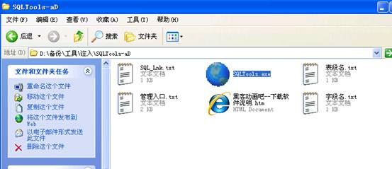
图1软件所在文件夹
说明：可以看到该工具有表段名、字段名等多个文本文件，这些文本文件就是SQL注入猜测的字典，有的注入工具的字典内容可以进行人工的添加和删除，以达到更好的猜测效果。
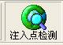2、注入点检测
运行软件，首先选择菜单中的“注入点检测”
，在网站地址栏输入需要探测注入点的地址，点击“打开”，如下图：
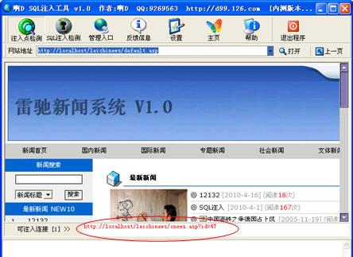
图2 查看是否有注入点
说明:若存在可以注入连接，会在页面下部显示连接的地址。
3、SQL注入检测
SQL注入检测有两种方法，一种，直接选中注入点检测后的注入连接结果，点右键，选择“选择本链接”即进入SQL注入检测。如下图
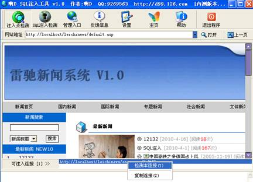
图3 注入点检测
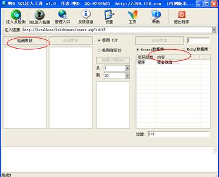
图4注入点检测2
说明：若事先已经知道注入点，则可直接运行“SQL注入检测”菜单，输入注入点地址，注意：该注入点地址必须是带？的地址。
上图结果可以看出已猜测出数据库为access数据库。
4、检测表段内容
如果存在注入漏洞，则检测表段的按钮会变成可操作键（对比旁边灰色按钮的“检测字段”）。点击“检测表段”，工具将自动检测可能得表名。如下图：
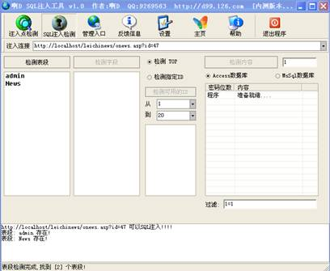
图5 表检测
说明：检测出的表段内容是根据工具自带的表名字典决定，所以不一定能够探测出该数据库所有表名。
5、检测字段
选择需要猜测的表名，再点击“检测字段”。在本实验中目的为获取管理员帐户和密码，所以选择admin表进行猜测，如下图。
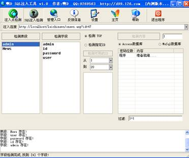
图6 字段检测
说明：检测出的字段内容是根据工具自带的表名字典决定，所以不一定能够探测出该表的所有字段名。
6、获取字段内容
探测结果看，因为有admin字段，估计该字段应该存储用户名（当然，user也可能存储用户名），首先确定admin字段中有几条记录，工具默认“检测TOP”，表示检测首条记录，个人也可以通过“检测指定ID”获取可用ID以确定记录条数，如下图：
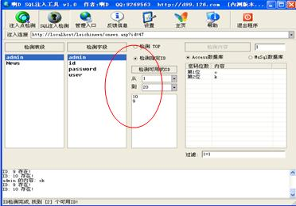
图7 检测字段内容
从检测结果可以看出，admin表中有两条记录，分别是ID为9和ID为10的记录。
随后检测指定ID的内容：选择需要检测的ID，点击“检测内容”，得到用户名“OK”，如下图：
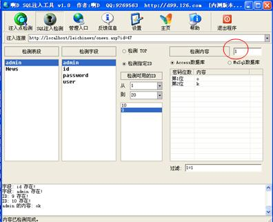
图8 admin字段内容检测结果
说明：另一种方法，可以直接选择“检测TOP”，通过检测内容旁的数字来猜测每条记录的内容。（改为2，即是猜测第2条记录的内容）。
同样的方法，可以对password进行猜测，得到内容，如下图：
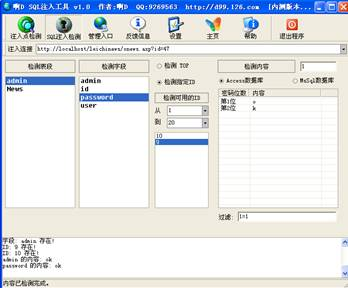
图9 password内容检测结果
说明：注意admin与password应该是对应的，如果已经检测出ID为9的用户名，相应地就应该猜测ID为9的用户的密码。还需要注意的是，该检测的内容是数据库中存放的内容，如果该密码进行了加密，则检测出的是加密后的内容。用户需要根据加密内容的特征来猜测原密码。
7、获取管理员入口
有的管理员入口是写在首页上，直接点击即可进入，本例中管理员入口在首页上未见，因此需要探测管理员入口。选择工具菜单上的“管理入口”， 点击“检测管理入口”，工具会自动搜索管理入口。如下图：
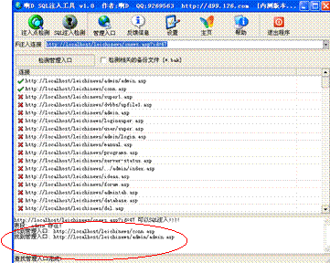
图10 获取管理员入口
从结果框可以看到搜索出可能的两个管理入口，同时也能可以在连接表中看到这两个连接前是。逐一选择后，点右键，在菜单中选择“在IE中打开链接”，如果页面返回成功则管理入口找到。如下图：
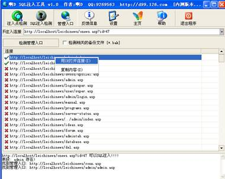
图11打开管理员入口
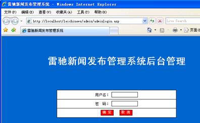
图12 后台界面
说明：后台管理入口的猜测也是工具从后台入口字典中获取。
8、进入后台
用之前猜测的用户名、密码进入后台。并通过增加管理员用户，或上传后门、木马完成进一步的提权操作。
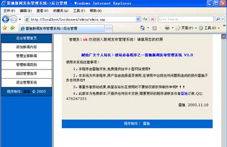
图13 进入后台
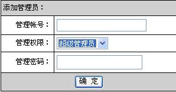
图14 修改、添加管理员
通过对access数据库的工具注入过程的研究，我们应了解工具注入的过程及工具的不同子功能的使用。工具注入的原理跟手动注入有类似之处，如以上实验所采用的工具中，打开
，可以看到如下图的信息，其实就是之前手动猜测的各种SQL语句。
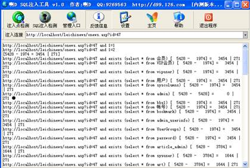
图15 反馈信息
需要注意的是：由于不同工具的功能、字典不同，因此针对同一网站，对注入点、表名、字段等信息的探测结果也会有所不同。